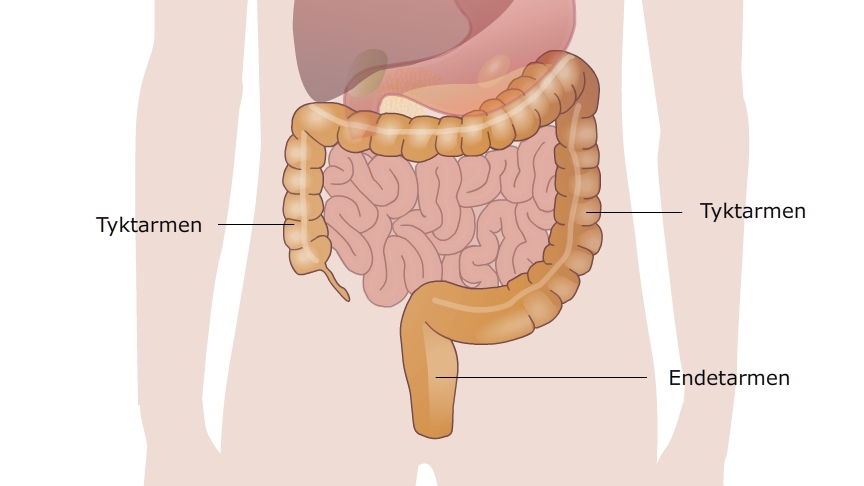

Nu er næringsstofferne ovre i blodet hvor de skal bruges, men hvad skal vi så gøre med resten? Her kommer tyktarmen i aktion.
Tyktarmens (se billede) opgave er at fjerne alt det vand der blev tilført maden i munden, maven og tolvfingertarmen. Ved at fjerne alt dette vand, bliver afføringen tør og fast i konsistensen. Tyktarmen kan fjerne adskillige liter vand i døgnet. At fjerne vand fra tyktarmen er smart fordi kroppen så genbruger en masse vand som man ellers skulle drikke. Herved kan mennesket klare sig med ca. 2,5 liter vand i døgnet i stedet for måske 10 liter, hvis vi ikke havde tyktarmen. I områder af verden hvor der er langt til vand, betyder det meget om man kun skal drikke 2,5 liter om dagen i stedet for 10 liter.
Tyktarmen har også andre funktioner end at fjerne vand fra afføringen. Den fjerner også salt som genbruges af kroppen.
Endetarmen er normalt tom, men når der er en portion færdig fra tyktarmen, bliver den fyldt og vi kan mærke at vi skal på toilettet - se Animation 2.
Tyktarmen er kroppens genbrugscentral, her hiver vi vand og salt ud af det der er tilbage af maden, inden vi sender det videre til endetarmen, hvor det som afføring forlader kroppen.